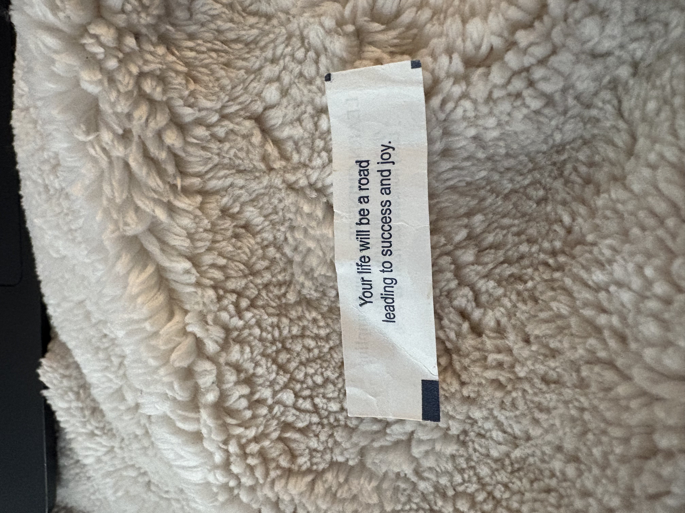
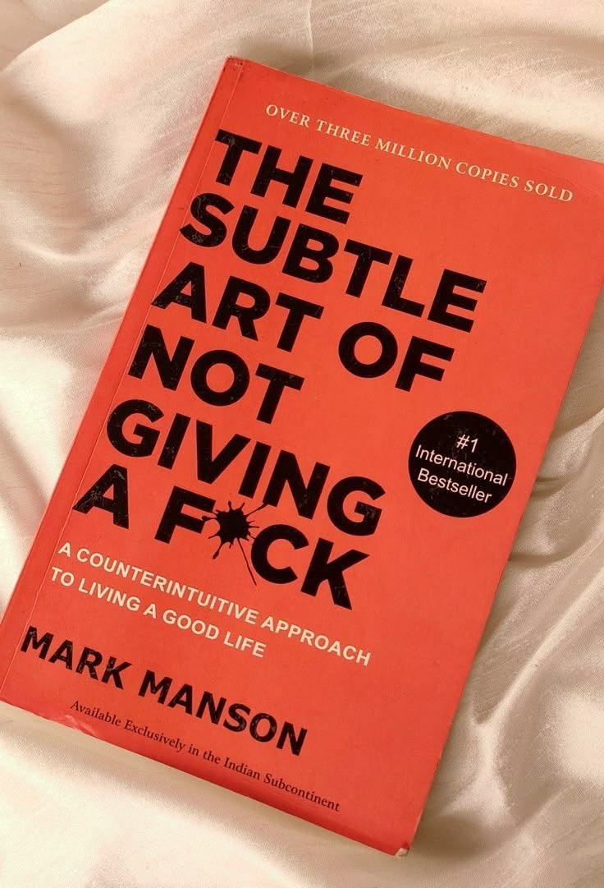
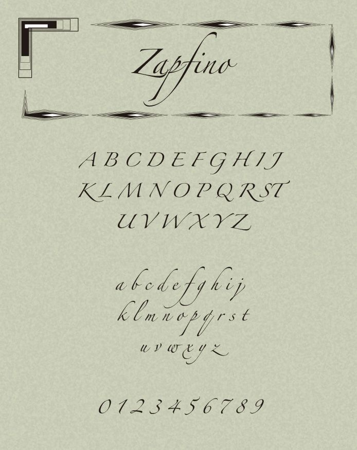
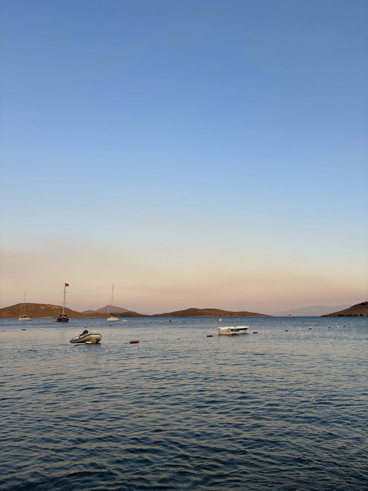
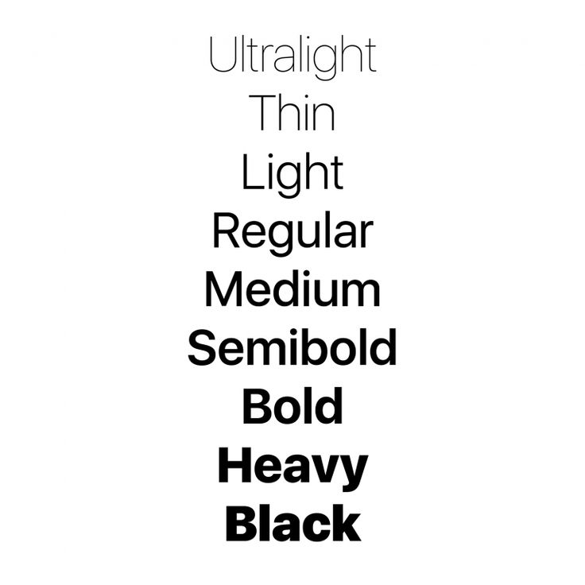
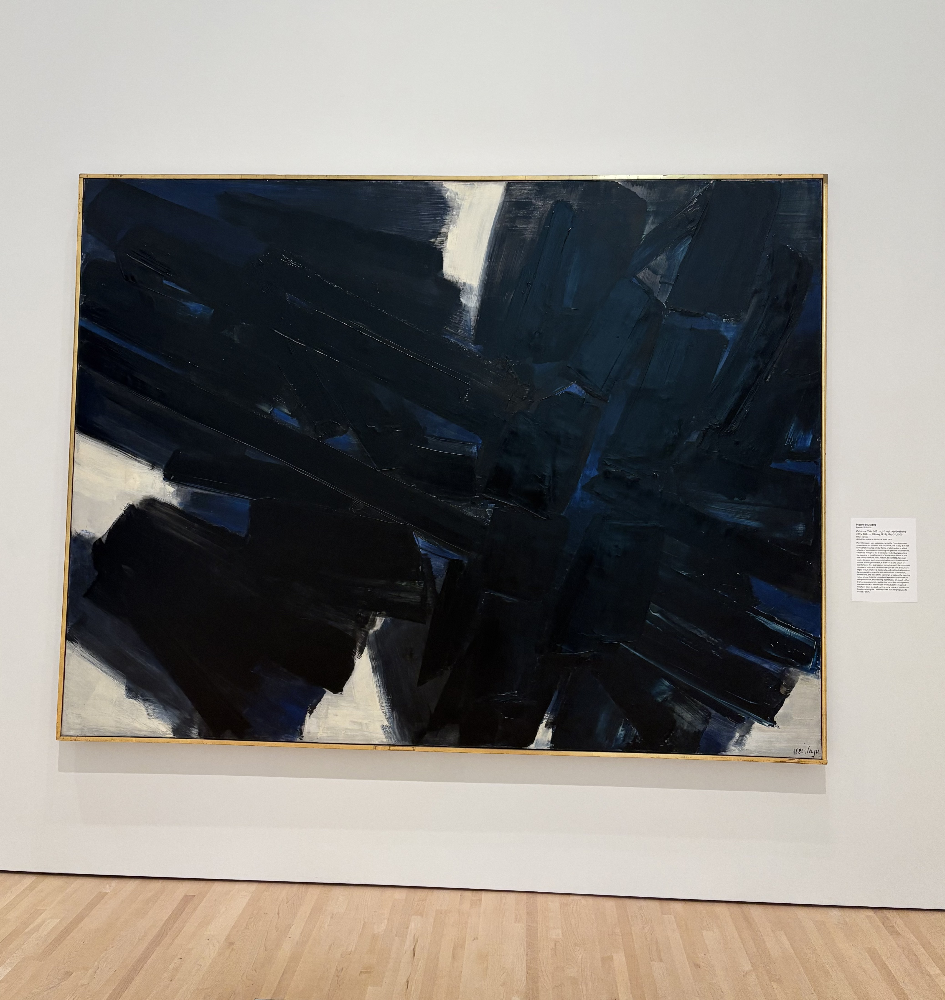
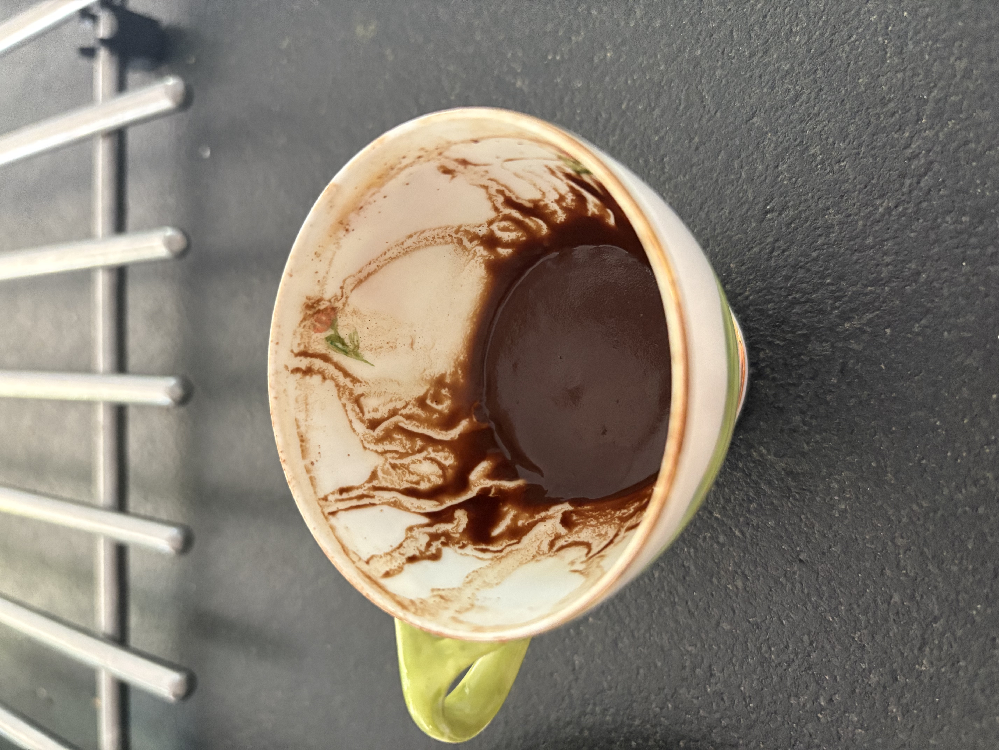
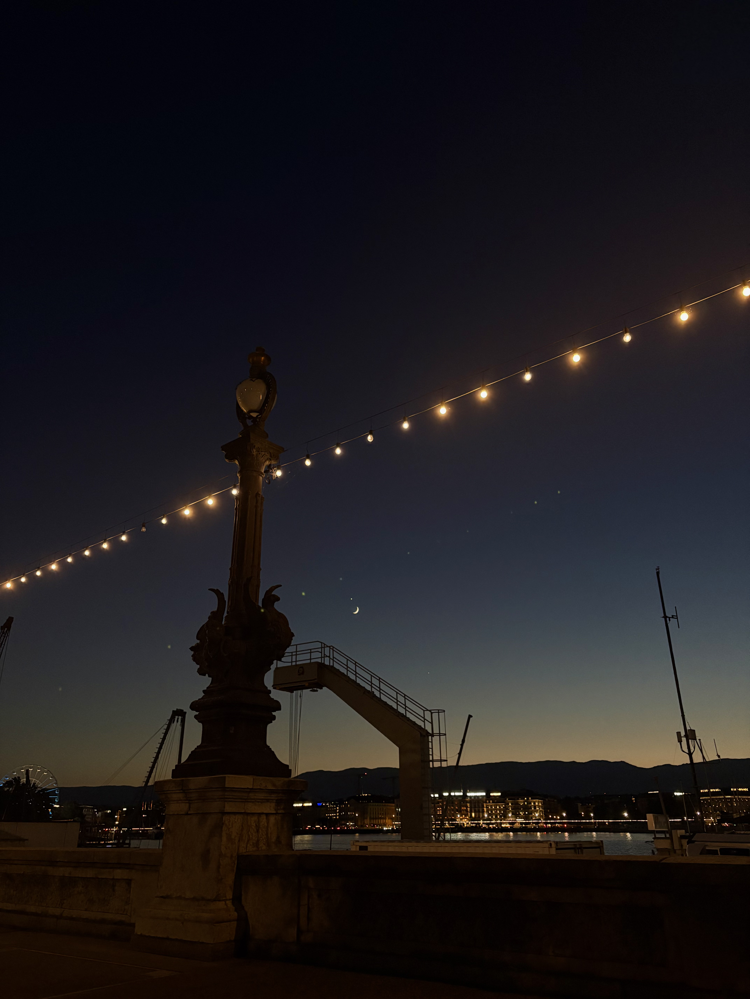

↑ click a latch to open the suitcase
hover an item to read its tag
Packed in: Lid · Paper scrap

"Your life will be a road leading to success and joy." Found at a random Chinese restaurant on the way back from a long away game. It came at a really good time for me.
Packed in: Lid · Orange book

A refreshing take on changing your mentality. It has helped me reframe my own perspective on challenges, and I keep returning to it for guidance and motivation.
Packed in: Lid · Open book

This font represents the splash of experimentation and creativity that I want to bring to my design work. I was really drawn to it when I was designing the Barrio menu.
Packed in: Lid mesh pocket · Camera

Bitez is a small town in Bodrum, Turkey, and it might just be my favorite place in the world. It reminds me of my family and summertime, and it has a really special place in my heart.
Packed in: Main compartment · Striped shirt

AKA this font. It's so clean and put together, it brings a sense of calm and order to my work. I've used it for most of my projects so far.
Packed in: Main compartment · Sweater stack

Simple, with very few elements, yet Soulages uses the color palette and brush strokes so well to tell a deep and dark story. The general vibe of this painting speaks to me.
Packed in: Lid mesh pocket · Earbuds
This song encapsulates the feeling of nostalgia perfectly for me. Teoman was a prominent artist in my childhood, and this song brings me back to my roots instantly.
Open link ↗Packed in: Main compartment · Pink headphones
A line from a Turkish song I've heard throughout my life. It means "life will surprise you all the time!" A good reminder to not take life too seriously, and to be open to the unexpected.
Packed in: Main compartment · Dark-wash jeans
This website captures the elegance and class that Ellipsus is going for as a brand. It shines a light on the products in a way that's both visually appealing and effective: a clean, simple design with intentional choices that lure you in.
Open link ↗Packed in: Lid mesh pocket · Cash
Such an interesting take on life. The mentality in this movie serves as my currency, kind of: it's what I spend when I need to push myself.
Packed in: Main compartment · Green sweatshirt

A small cup with a whole ritual around it. It brings everyone to the table, and it reminds me to slow down and actually enjoy the moment.
Packed in: Main compartment · Light-wash jeans
A cozy little spot that feels like a hidden gem in St. Louis. Its warm, lively atmosphere is what I wanted to capture when I was working on its menu.
Packed in: Main compartment · NY cap
This song was on repeat when it first came out, and now I associate it with a specific time in my life. I can't help but replay it, and everytime I play it, I'm transported back to that moment.
Open link ↗Packed in: Main compartment · Teddy bear
My favorite food, and the taste of home. Like the teddy bear, it's the comfort I'd always pack.
Packed in: Main compartment · Sneakers

This is the place that grounds me, like the shoes I walk it in.
Packed in: Lid mesh pocket · Toiletry bag
Here's a brief summary of everything: Some themes that kept coming up throughout everything I packed are reflection and my general outlook on life, while also being straight to the point and not doing too much. It's a good representation of my personal outlook on life and the kind of things that inspire me.